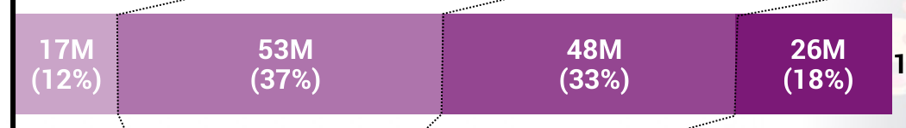
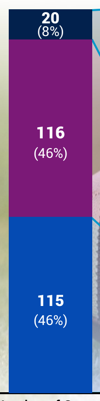

Social video time continues to grow in the U.S., but growth is decelerating. YouTube maintains the broadest reach across age cohorts. TikTok and Instagram are projected to lead ad revenue growth among social video platforms. Per-user monetization is highest on Instagram and Facebook, with some platforms showing declining ARPU into 2026E.
Average Daily Social Video Time per Adult (U.S.), 2019–2024E vs 2028E


“We forecast that people will continue to watch more social video over the next four years; however, growth is slowing down” — Unknown
For brands, the mix should tilt toward social video, but decelerating time growth and signs of ARPU compression require sharper creative, tighter audience targeting, and rigorous incrementality testing to protect ROAS. Prioritize TikTok and Instagram for growth, while leveraging YouTube’s broad reach for scaled outcomes. Expect CPM and competition to intensify; manage frequency caps, diversify placements, and harmonize MMM with geo experiments and attention metrics to verify lift. Creative iteration native to each platform and first‑party data activation will be essential to sustain efficiency as monetization dynamics shift.